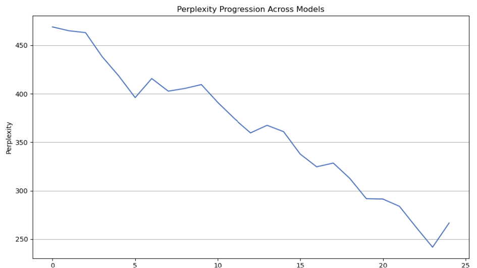

Flagship LLM Project
Demonstrating the advanced problem-solving abilities of undergraduate co-ops under limited supervision. This project showcases innovation, technical expertise, and perseverance.
Project Details / Background
This project was a flagship initiative for the Roux Institute, showcasing that undergraduate co-ops can tackle advanced problems with minimal supervision. The primary challenge was building a large language model (LLM) with limited hardware resources, including personal laptops and one A100 GPU. My role required developing a deep understanding of transformer architectures, particularly GPT, and fine-tuning parameters like dropout probabilities, batch size, and model dimensions to optimize performance.
The project aimed to balance minimizing the model's perplexity while ensuring it completed training within a tight deadline of December 13. Below are some of the key challenges and solutions:
Challenges and Solutions
Computation: We had to ensure sufficient computing power to complete training in under two months. I gained access to Northeastern's Discovery Cluster, a high-performance computing resource, where I learned to manage SLURM files and queue jobs efficiently. Additionally, I estimated the required floating-point operations (FLOPs) to train the 1B parameter model and projected the total training time.
Storage: As the model grew to 700M parameters, each snapshot reached approximately 3GB. GitHub's storage limits required alternative solutions. We stored SLURM files locally on the Discovery Cluster and transferred them to OneDrive. For future scalability, we proposed an action plan to leverage AWS S3 for snapshot storage, ensuring continuity if further training was needed.
Capacity: Managing disk space involved adjusting batch size and gradient accumulation to achieve efficiency while maintaining low perplexity. This iterative process balanced performance and resource constraints effectively.
Evaluation: I developed a script to evaluate perplexity after each model snapshot, ensuring consistent performance tracking. This required a thorough understanding of GPT architecture and evaluation metrics.
Results

Perplexity across 25 models, each model increasing by 40M parameters.